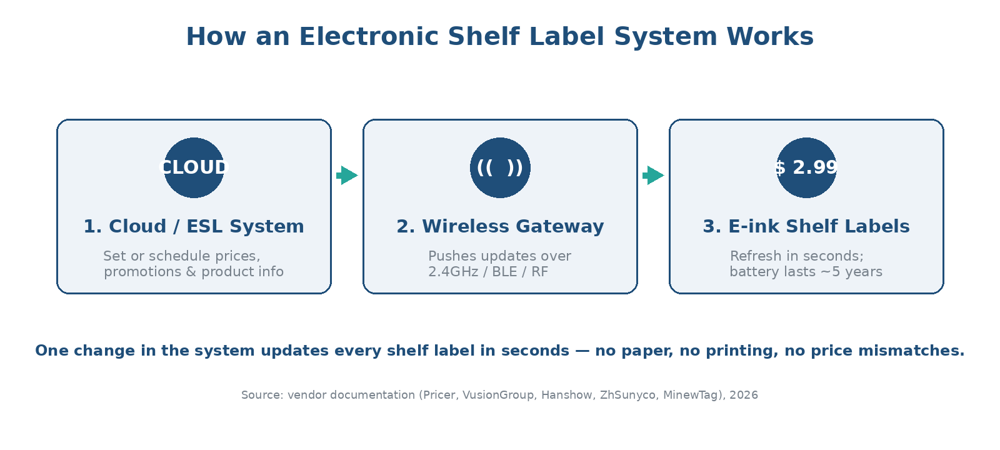
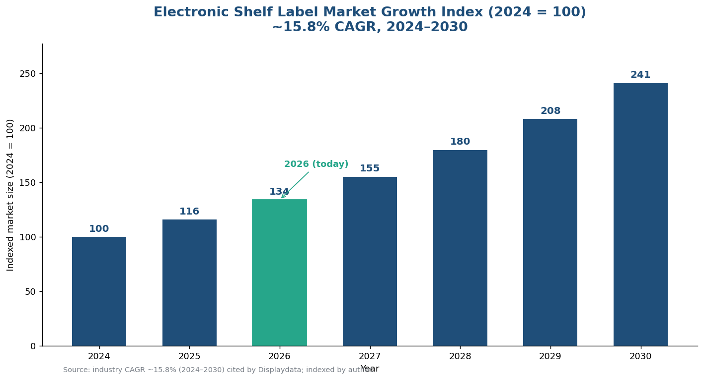

This guide answers the questions retailers most often ask before rolling out ESL: how they work, what they cost, how they compare with barcodes and RFID, and when they pay for themselves.
What are electronic shelf labels?
An electronic shelf label is a battery-powered digital display that shows a product’s price and information on the shelf edge. Most ESLs use electronic paper (e-ink) — the same low-power screen technology found in e-readers — because it stays readable without constant power and holds its image even when idle.

How do electronic shelf labels work?
An ESL system has three parts: a management system (cloud or on-premise), one or more wireless gateways/access points in the store, and the e-ink labels on the shelves. When you change a price in the system, the command travels to the gateway and is pushed wirelessly to the matching labels, which refresh within seconds.
What wireless technology do ESLs use?
Most large deployments use a low-power 2.4GHz proprietary radio or sub-GHz RF for range and battery life; smaller stores may use Bluetooth Low Energy (BLE) or NFC. The trade-off is range and refresh speed versus battery life and infrastructure cost.
How long do ESL batteries last?
Because e-ink only consumes power on refresh, mainstream ESL batteries last roughly 5–8 years even with several updates per day, and the system warns you before end of life.
What are the benefits of electronic shelf labels?
- Instant, store-wide repricing — change a price once and it syncs everywhere in seconds, enabling dynamic pricing and timed promotions.
- Price accuracy — shelf, online and checkout prices share one source, eliminating mismatches, disputes and compliance risk.
- Labor savings — staff stop printing and swapping paper tags and shift to restocking and service; often dozens of hours saved per store per week.
- Less waste — no more printing thousands of paper tags every week.
- Smarter operations — many ESLs add pick-to-light flashing to speed up restocking, picking and click-and-collect.
Electronic shelf labels vs barcode vs RFID: what’s the difference?
ESLs, barcodes and RFID solve different problems. Barcodes and RFID identify and track items; ESLs display and update information at the shelf edge. Many stores use them together.
| Aspect | Electronic Shelf Labels (ESL) | Barcode | RFID Tags |
|---|---|---|---|
| Real-time updates | Yes | No | Yes |
| Shows price to shopper | Yes (digital display) | Static printed | No |
| Wireless communication | Yes | No | Yes |
| Pricing flexibility | Highly flexible | Static | Variable |
| Typical use | Shelf-edge pricing & info | Item ID at checkout | Inventory tracking |
| Per-unit cost | Highest | Lowest | Medium |
| Power | Battery (~5 yrs) | None | Passive / none |
Are electronic shelf labels better than paper tags?
For stores that reprice often or carry many SKUs, yes. Paper is cheaper per unit but never stops costing money — printing, labor and errors recur every week. ESLs cost more upfront but eliminate those recurring costs.
| Factor | Paper tags | Electronic shelf labels |
|---|---|---|
| Upfront cost | Very low | Higher (hardware + setup) |
| Cost over time | Recurring (print + labor, weekly) | One-time, lasts years |
| Repricing speed | Hours, manual | Seconds, automatic |
| Price errors | Common | Near-zero |
| Best for | Tiny shops, stable prices | Multi-SKU, frequent repricing |
How much do electronic shelf labels cost, and what’s the ROI?
Total cost depends on label count, screen size and colour, and infrastructure (gateways, software, install). The ROI case rests on three lines: labor saved, fewer pricing errors, and incremental revenue from dynamic pricing and reduced markdown waste.

When do electronic shelf labels pay for themselves?
Payback is fastest for formats with many SKUs and frequent repricing. Indicative ranges below — validate with your own labor rates and SKU counts:
| Store type | SKU count | Repricing frequency | Typical payback* |
|---|---|---|---|
| Convenience store | 1k–3k | Low–medium | ~30–36 months |
| Supermarket / grocery | 15k–40k | High | ~18–30 months |
| Electronics / DIY | 5k–20k | Medium–high | ~24–30 months |
| Pharmacy | 8k–15k | Medium | ~24–30 months |
* Indicative only; payback varies with labor cost, promotion intensity and label/infrastructure pricing.
Want to see the numbers for your network? Try the AiESL ROI calculator or request a custom quote — AiESL runs on open middleware, so you can start on hardware you already own.